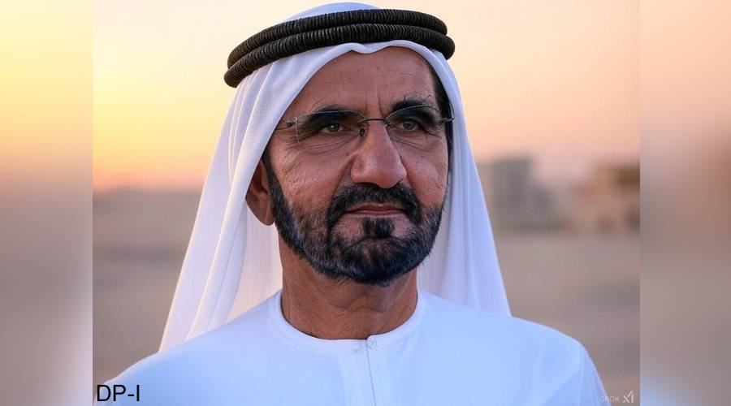

واشنگٹن (ڈیلی پاکستان آن لائن) امریکی صدر ڈونلڈ ٹرمپ نے روسی صدر ولادیمیر پیوٹن سے فون پر یوکرین جنگ
کے خاتمے کے حوالے سے بات کی ہے۔ یہ کسی امریکی صدر اور پیوٹن کے درمیان 2022 کے بعد پہلا براہ راست
رابطہ قرار دیا جا رہا ہے۔
نیو یارک پوسٹ کی رپورٹ کے مطابق ٹرمپ مسلسل یہ دعویٰ کرتے رہے ہیں کہ وہ یوکرین جنگ ختم کر سکتے ہیں
لیکن انہوں نے ابھی تک اپنی حکمت عملی کے بارے میں کھل کر کچھ نہیں بتایا۔ گزشتہ ہفتے انہوں نے اس جنگ
کو "قتل و غارت گری" قرار دیتے ہوئے کہا تھا کہ ان کی ٹیم نے کچھ بہت اچھی بات چیت کی ہے۔

دبئی (آئی این پی ) دبئی کے حکمران نے بیوروکریسی میں کمی کے اقدام کے نتائج کا اعلان کرتے ہوئے بہترین
اور بدترین سرکاری محکموں کی درجہ بندی
خلیج ٹائمز کی رپورٹ کے مطابق متحدہ عرب امارات کے نائب صدر, وزیر اعظم اور دبئی کے حکمران شیخ محمد بن
راشد المکتوم نے ان اداروں کو گزشتہ سال کے دوران کارکردگی کی بنیاد پر فہرست میں شامل کیا، یہ اقدام
2023 کے آخر میں بیوروکریسی کے خاتمے اور کمی کی تحریک کے آغاز کے بعد سامنے آیا ہے۔امارات پوسٹ، پنشن
اتھارٹی اور وزارت کھیل کو بیوروکریسی کم کرنے میں 3 بدترین اداروں کے طور پر درجہ دیا گیا۔دریں اثنا،
محکمہ انصاف، محکمہ خارجہ، محکمہ توانائی اور انفرااسٹرکچر کو بہترین اداروں کا درجہ دیا گیا، جنہوں نے
بیوروکریسی کا مقابلہ کرنے کی اپنی کوششوں میں بہترین کارکردگی کا مظاہرہ کیا۔دبئی کے حکمران نے ایک
سوشل میڈیا پوسٹ میں کہا کہ ہم نے ان اداروں کے ردعمل کا جائزہ لینے، بہتر خدمات، اعلی کارکردگی اور
لوگوں کے لیے آسان زندگی کو یقینی بنانے کے لیے ایک جائزہ شروع کیا ہے۔
 WHATSAPPاوپر کلیک کریں03097383304
WHATSAPPاوپر کلیک کریں03097383304